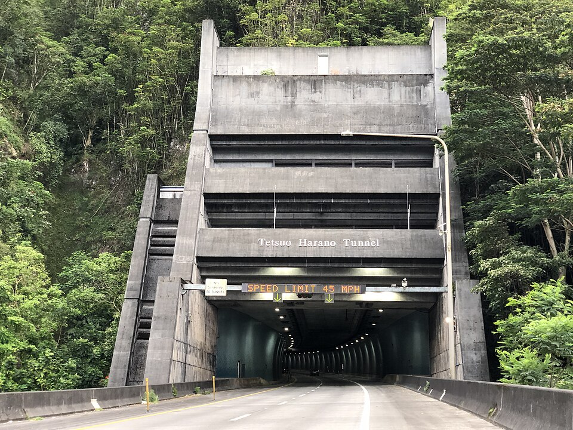

Tetsuo Harano Tunnels
Place: Tetsuo Harano Tunnels, Interstate H-3, Oʻahu
Type: Highway tunnels / transportation infrastructure
Namesake: Tetsuo Harano, civil engineer and longtime administrator of Hawaiʻi's Highways Division
Story it tells: How a civil engineer who devoted 52 years to Hawaiʻi's highway system had his name removed from one of the state's largest infrastructure projects, and how the community helped restore it.

The Tetsuo Harano Tunnels, which carry the H-3 Freeway through the Koʻolau Range, honor a man who devoted 52 years of his life to Hawaiʻi's highway system. Born in Honolulu in 1920, Harano studied civil engineering at the University of Hawaiʻi before beginning his career with the territorial highway department. He worked his way through the engineering ranks and eventually became the administrator of the Hawaiʻi Department of Transportation's Highways Division. During his career, Harano helped design and oversee the development of Hawaiʻi's modern highway network, including the H-3 Freeway, a project that faced decades of intense scrutiny through legal challenges, environmental and cultural concerns, route shifting, and escalating construction costs. Harano is a bit unique in that his name rests on major public infrastructure while supporting the project as an administrator (most are named after ali‘i or politicians).
Construction of the tunnels began in 1990 and presented considerable engineering challenges. Crews excavated through the volcanic rock of the Koʻolau Range, encountering fractured basalt and pockets of water trapped within the mountain. The two tunnels, each nearly a mile long, required significant drainage, waterproofing, ventilation, lighting, and traffic control systems. Even the entrances were designed to blend into the mountainside. In November 1994, the tunnels were dedicated in Harano's honor, the same year he retired. The H-3 Freeway officially opened on December 12, 1997, connecting Hālawa with Kāneʻohe and completing one of the largest and most challenging public infrastructure projects in Hawaiʻi's history.
In March 2001, Governor Ben Cayetano issued an executive memorandum renaming the tunnels in honor of former Governor John A. Burns. Cayetano cited Burns' role in securing federal support for the development of the freeway. The entire H-3 Freeway, however, already bore Burns' name along with other sites that celebrate the former governor. Under the change, Harano's name would instead be assigned to the freeway's traffic control center. Harano reportedly told his family not to get upset over the decision, although he later acknowledged that he had never agreed to the change. The removal of his name prompted a grassroots effort led by community members Yoshie Tanabe and Kongo Kimura, whose petition gathered approximately 10,000 signatures in support of restoring the name to a public servant.
Shortly after taking office in December 2002, Governor Linda Lingle rescinded the previous administration's decision and restored Harano's name to the tunnels. Harano remained a resident of Kaimukī until his death in December 2015 at the age of 95. Today, thousands of motorists pass through the tunnels with little knowledge of the man whose name appears above them or the community effort that returned it there. The freeway and its tunnels recognize two different contributions to the same project: the political efforts that helped make the freeway possible and the decades of engineering and administrative work that helped bring it to completion. The Tetsuo Harano Tunnels serve as a reminder of the contributions of career public servants, whose work often goes unnoticed even as we use the infrastructure they helped build every day.